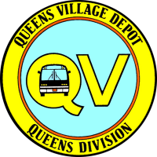
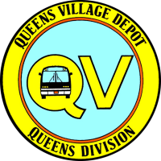

Introduction to the depots
There are many ways that we travel through NYC in order to get where we need to go, but did you know who specifically makes up the bus division of the MTA, or what division that your route is served by? This page has all of the above(at least for the borough of queens) that has info on what's currently going on in these eight depots.
The depots will be divided into two sections; the first half and the second half, from Baisley Park to Far Rockaway for the first four, and from Jamacia to Queens Village for the second half.


 
